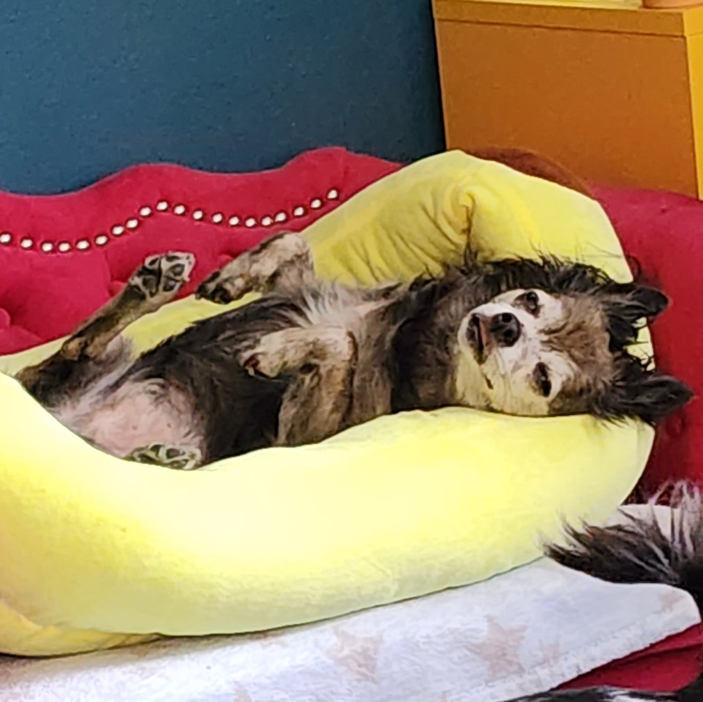
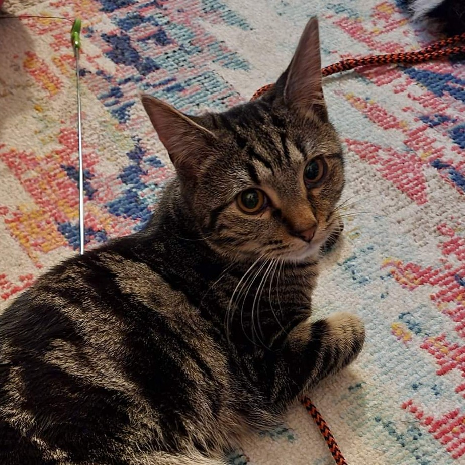

My Family
Special thanks to my wife, Ren. Your support and encouragement
are what motivate me to pursue my dreams and passions. I love you!
- Cosmo
- The king of the household and master of all bleps

- Chewie
- Precious soft boi Chewie,aka: The Problem Child (endearingly)

- Bella
- The house walrus

- Rory
- Princess of the house, and the rule enforcer

- Sprout
- Sassy, aloof, and the owner of the local bakery

- Mufasa
- Handsomest bo bansomest man of all mans

- Honey
- Soft, shy, and only has three legs

- Newt
- Little monkey, lanky, loves soft rugs

- Kovu
- Precious baby boi, one eye, captain of the ship (only
because he looks like a pirate, he holds no authority)

- Bean
- Resident crazy girl

- Solar
- Parrot dog that sleeps on my shoulders